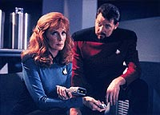
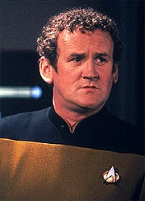
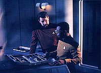
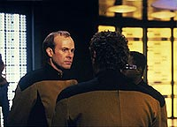

|
MANCHETE
DO EPISDIO
Episdio
tenta falar de hipocondria,
mas
se perde em high-concepts
Episdio
anterior | Prximo
episdio
Sinopse:
Data Estelar: 46041.1.
A Enterprise enviada para investigar o paradeiro da USS Yosemite,
uma nave de pesquisa da Frota Estelar enviada para estudar o fluxo
de plasma em uma estrela binria. Chegando nas imediaes do
local, Picard e cia. descobrem a nave perdida imersa no fluxo de
plasma. Tentativas de comunicao fracassam, e os sensores no
conseguem vencer a interferncia e determinar se h formas de vida
a bordo.
Procurando uma alternativa, Picard decide enviar um grupo avanado
at a nave via teletransporte, uma vez que uma nave auxiliar no
suportaria a presso exercida pelo plasma estelar que envolvia a
Yosemite. Riker convoca Worf, Crusher e Geordi, para a misso. O
engenheiro, por sua vez, chama Reginald Barclay, por requisitar sua
especialidade naquela tarefa especfica. Mesmo hesitante, o tenente
obrigado a ir.
O chefe de transporte O'Brien informa que o sistema s ir
funcionar se os equipamentos de teletransporte da Enterprise e da
Yosemite trabalharem juntos. Ele estabelece a conexo e o
sincronismo sem dificuldade, mas alerta que ao grupo avanado que o
processo de teleporte s ser possvel com um de cada vez e levar
o dobro do tempo normal. Todos concordam e so, um a um,
transportados. Quando chega a vez de Barclay, ele no resiste
presso e simplesmente abandona a sala de transporte. O grupo avanado
segue com os trabalhos sem a ajuda do engenheiro.
 A
bordo da Yosemite, eles encontram apenas um corpo, totalmente
queimado. Os outros tripulantes esto desaparecidos. E o sistema de
teletransporte, embora funcional, apresenta diversas avarias
consistentes com uma exploso. A hiptese corroborada por
restos de um recipiente espalhados por sobre a plataforma,
provavelmente danificado pela mesma exploso. Crusher no est
certa sobre a causa da morte do tripulante encontrado e pede a Riker
autorizao para levar o corpo Enterprise para autpsia. O
primeiro-oficial concorda.
Enquanto isso, a bordo da Enterprise, Jean-Luc Picard contatado
pelo almirantado da Frota, que relata sobre um possvel ataque
Cardassiano a outra nave da Federao naquele setor. Picard revela
que existe a possibilidade de a Yosemite tambm ter sido atacada
--dada a exploso que l ocorreu--, mas que seu grupo ainda no pde
determinar o fato. Ele se compromete a avisar imediatamente, caso se
confirme a hiptese de um ataque.
Paralelamente, Barclay vai procurar a conselheira Troi para tentar
resolver seu medo do teleporte. Depois de uma conversa, Deanna o
convence de que seu temor absolutamente normal e ensina ao
engenheiro uma tcnica de relaxamento Betazide. Revigorado pela
confiana, Barclay decide se juntar ao grupo avanado. Ele se
teleporta para a Yosemite e bem recebido por seus colegas.
Entretanto, o trabalho no se demora muito por l e logo todos esto
retornando.
Quando Barclay est se teletransportando de volta Enterprise,
ele passa por uma estranha experincia. No momento em que ele est
se desfazendo, ele observa, no feixe de transporte, uma criatura
estranha. Parecida com um verme gigante, ela torna-se cada vez mais
ameaadora e chega at a morder o brao esquerdo do engenheiro
antes que ele se rematerialize na plataforma da Enterprise.
Barclay relata o ocorrido, e Geordi ordena que O'Brien faa uma
reviso completa do sistema de teletransporte, na tentativa de
explicar o fenmeno. Entretanto, todas as anlises do o mesmo
resultado: o transporte estava totalmente operacional. Diante disso,
todos comeam a acreditar que tudo no passou de um produto da
imaginao de Barclay. Inclusive ele passa a acreditar nisso, cada
vez mais convencido de que possui uma doena chamada psicose do
transporte, diagnosticada pela primeira vez em 2209 e sem tratamento
conhecido.
 Com
essa idia cada vez mais incutida em sua mente, ele comea a se
comportar de forma mais nervosa e estranha a cada momento. Quando
ele se recusa a conversar com a conselheira Troi a respeito, ela usa
de seus poderes mdicos a bordo e o dispensa do servio. Mais
insatisfeito ainda, Barclay se isola em seus aposentos, onde comea
a amargurar os sintomas da suposta doena. O mais impressionante
deles a sensao de que seu brao esquerdo, que teria sido
tocado pela criatura, fica azulado e brilhante em alguns momentos.
Enquanto isso, Data e Geordi continuam analisando os fragmentos de
vidro encontrados na Yosemite e concluem que o que aconteceu por l
foi uma exploso de plasma que teria sido transportado a bordo para
anlise. Eles pretendem reproduzir o experimento na Enterprise,
desta vez com todo o cuidado para que o incidente catastrfico no
se repita, envolvendo o invlucro de vidro em um potente campo de
fora.
Na enfermaria, a dra. Crusher segue com a autpsia do corpo
recolhido. Ela conclui que as queimaduras externas no foram a
causa da morte do oficial, mas sim uma estranha radiao que emana
do interior do corpo. A mdica no consegue, entretanto,
determinar o porqu dessa leitura extica.
Em seus aposentos, Barclay decide que precisa saber se realmente est
imaginando coisas ou se a experincia que ele vivenciou real.
Ele decide reproduzir seu teletransporte, pedindo ajuda ao chefe O'Brien.
Depois de ordenar, Barclay teleportado para a Yosemite e de volta
Enterprise, onde ele novamente tem um encontro com o verme
gigante. Convencido de que no imaginou nada, ele convoca toda a
tripulao snior, no meio da madrugada.
Em uma reunio, ele relata suas experincia e a sensao que tem
periodicamente em seu brao esquerdo. Picard em princpio tende a
desacreditar o engenheiro, mas depois que Barclay d a certeza de
dizer que o que viu real --e de que h algo vivo no feixe de
transporte--, o capito decide investigar a fundo, ordenando mais
anlises do sistema. Crusher examina rapidamente o brao de
Barclay e no v nada de anormal, mas decide fazer exames mais
detalhados na enfermaria.
L ela descobre que o brao de Barclay est apresentando as
mesmas leituras que o corpo recolhido da Yosemite. Na engenharia,
Data e Geordi transportam a bordo uma nova amostra do plasma, que
explode assim que eles aplicam uma varredura de rotina. Felizmente a
exploso contida pelo campo de fora. Observando o plasma,
Geordi observa um estranho e complexo padro biolgico no plasma
--h algo vivo l, segundo ele.
Reundindo os esforos de Crusher e Geordi, os oficiais determinam
que de fato h uma forma de vida envolvida, uma espcie de bactria
capaz de se comportar como matria e energia ao mesmo tempo. Nativa
do plasma estelar, ela foi transportada bordo da Yosemite quando
eles coletaram uma amostra do material e infectou o sistema de
transporte da nave. Quando ligaram o teletransporte da Enterprise ao
da Yosemite, eles levaram a contaminao a bordo, causando os
efeitos observados por Barclay. O engenheiro, entretanto, no sabe
explicar o que ele viu no feixe de transporte --as bactrias a que
Crusher e Geordi se referem certamente so bem menores que os
vermes gigantes que ele observou.
Geordi e O'Brien determinam que a bactria acabou passando pelos
biofiltros do teletransporte por sua natureza elusiva de matria/energia,
mas acreditam que podem "sintonizar" o equipamento e
detectar as formas de vida se colocarem Barclay em suspenso no
teletransporte por cerca de 40 segundos. Assim que o sistema fosse
capaz de identificar as bactrias, poderia "limp-las"
do corpo do engenheiro e cur-lo.
 A
estratgia d certo, mas por longos segundos Barclay precisa
enfrentar a angstia de estar face a face com os estranhos vermes
do feixe de teletransporte. Incerto da natureza daquelas criaturas,
o engenheiro, num ato de coragem, decide agarrar uma delas. Quando
se materializa de volta, ele est abraado a um dos tripulantes
desaparecidos da Yosemite. Ele logo comunica que h mais a serem
resgatados no feixe. Logo Worf e um grupo de segurana se
transportam e resgatam os "vermes" faltantes, trazendo os
tripulantes perdidos de volta, sos e salvos.
Ao que parece, aqueles tripulantes tentaram se salvar da mesma forma
que Geordi e O'Brien pretendiam salvar Barclay, colocando-o no feixe
de transporte e rastreando a contaminao. S que no caso do
pessoal da Yosemite, a estratgia no deu certo, e eles ficaram
presos no feixe, onde pareciam se manifestar como os vermes
observados por Barclay. Somente quando o engenheiro os agarrou eles
puderam retornar.
Comentrios:
"Realm of
Fear" um bom exemplo da verdade que h no ditado que
diz que de boas intenes o inferno est cheio.
Aparentemente, o episdio se pauta pelas diretrizes bsicas de bom
drama trazidas para Jornada pelo roteirista Michael Piller:
ele procura se concentrar em um drama humano, algo com que a audincia
possa se identificar, ele busca tornar aquele drama algo pertencente
a um dos personagens da srie e tenta imprimir a esse personagem,
ao superar seu problema, um carter de crescimento e
desenvolvimento.
J vimos a mesma receita antes em verdadeiros clssicos de A
Nova Gerao, como "Sins of the Father" (para
Worf), "The Offspring" (para Data) ou "The
Inner Light" (para Picard). Aqui a idia fazer algo
pelo bom e velho recorrente Reginald Barclay.
natural que ele tenha sido escolhido para algo assim. O problema
que ele apresenta, o medo do teletransporte, algo que no
funcionaria com nenhum dos outros personagens, que j foram vistos
se transportando inmeras vezes. Alm disso, a verdadeira anlise
psicolgica do episdio --a que mais fala ao telespectador--
sobre a hipocondria do engenheiro. E esse um trao de
personalidade que no cairia bem com os quase perfeitos oficiais
seniores da Enterprise. , portanto, uma excelente pedida trazer um
simptico (e problemtico) recorrente como Barclay para dar uma mozinha.
At a vo as boas intenes do episdio: fazer um episdio
sobre um tema do cotidiano das pessoas e sobre um personagem (mais
ou menos) querido do pblico. Parecia perfeito, em princpio. O
que se viu, entretanto, foi uma verdadeira aberrao.
 Em
primeiro lugar, a histria no s recheada por tecnobaboseira,
como sustentada por ela! sempre interessante vermos
roteiristas criativos, inventando formas de vida que desafiam a
compreenso humana, mas preciso manter alguma coerncia e algum
contato com a realidade, para que a histria seja divertida. Aqui o
roteirista Brannon Braga infelizmente demonstrou que quem estava com
psicose do transporte no era Barclay; era ele.
O maior problema de todo o episdio (e no o nico, pode estar
certo) o fato de o enredo tratar o feixe do transporte como uma
outra dimenso, do qual coisas, pessoas e bactrias podem entrar e
sair. O feixe do transporte meramente o efeito especial luminoso
que representa a desmaterializao de alguma coisa e sua
rematerializao em outro lugar. No podem, de fato, existir
pessoas ou vermes gigantes "guardados" no feixe.
Mas como diz outro ditado, quem sai na chuva, pra se molhar. Dcadas
de produo de Jornada nas Estrelas j mostraram que usar
o transporte para qualquer outra coisa que no o mero ato de
transportar pedir encrenca. Brannon pediu, Brannon recebeu. O uso
do sistema para "curar" Barclay s no pior que o
engenheiro agarrando um verme que se transforma em tripulante depois
de materializado. Algum poderia me dizer qual o sentido que isso
faz?
o tipo da coisa que irrita o telespectador: ver que o escritor s
o manipulou, colocando os vermes l para pensarmos que o engenheiro
estivesse sob ataque de algum monstro, quando na verdade no era
nada disso. Se houvesse uma boa explicao para o fato de
tripulantes perdidos se manifestarem como vermes gigantes em feixes
de teletransporte, at daria para engolir, com o nariz tapado e
tomando gua por cima. Mas do jeito que ficou, s d para chorar
mesmo.
Perdido na tecnobaboseira e nos high-concepts absurdos, est
Barclay, que s sobrevive graas interpretao sempre
convincente de Dwight Schultz. Pelo menos o aspecto do drama humano
est bem guardado com ele. Nesse sentido, o roteiro equilibra bem o
humor com a terrvel doena que a hipocondria. E a nica
coisa que realmente se salva daqui.
O resto est todo fora de lugar. O'Brien, com seu papo de aranhas,
parecia um boboca. Quando ele apresenta seu "bichinho" a
Barclay ao fim do episdio, d vontade de chutar o televisor. Troi,
que costuma ir razoavelmente bem quando o assunto Barclay, dessa
vez abusa de seu poder e dispensa o engenheiro de seu servio, numa
atitude no mnimo precipitada. E a ameaa Cardassiana jogada
ali s para, mais uma vez, despistar a audincia da verdadeira (e
horrvel) natureza da histria.
Do ponto de vista tcnico, o diretor Cliff Bole tem a honra de
dirigir algumas tomadas inovadoras, como a sensao de
teletransporte em primeira pessoa, mas no h muito mais a se
destacar. Nos efeitos especiais, aquele sistema binrio no passa
de uma reciclagem (ou, no mximo, de uma retocada) de material
visto em "Evolution", do terceiro ano. E os vermes
que Barclay v no feixe parecem sados de um filme "B"
de fico. Terrvel.
Depois da traumtica experincia, s deu mesmo para aprender uma
coisa: Jornada nas Estrelas e "O Ataque dos Vermes
Malditos" so coisas que deviam ficar bem separadas uma da
outra. Infelizmente, Brannon Braga no teve o mesmo insight, como
comprovariam as salamandras de "Threshold",
do segundo ano de Voyager...
Citaes:
Barclay - "You
know, maybe ignorance really is bliss. If I didn't know so much
about these things, maybe they wouldn't scare me so much."
("Sabe, talvez ignorncia seja mesmo uma bno. Se eu no
soubesse tanto sobre essas coisas, talvez elas no me assustassem
tanto.")
Trivia:
 Aps quatro temporadas, o tenente O'Brien subitamente perdeu seus
dois pinos originais de marcao de patente, substitudos por um
pino vazio. Durante o episdio tambm vemos os pinos vazio e cheio
de Barclay trocando de lugar, assim como vemos o tenente usar dois
pinos cheios no escritrio de Troi.
Aps quatro temporadas, o tenente O'Brien subitamente perdeu seus
dois pinos originais de marcao de patente, substitudos por um
pino vazio. Durante o episdio tambm vemos os pinos vazio e cheio
de Barclay trocando de lugar, assim como vemos o tenente usar dois
pinos cheios no escritrio de Troi.
Dwight Schultz faz sua terceira apario como Barclay em A Nova
Gerao. A primeira foi em "Hollow Pursuits"
(terceiro ano) e a segunda em "The Nth
Degree" (quarto ano). Ele ainda voltaria em "Ship
in a Bottle" (tambm do sexto ano) e em "Genesis"
(stimo ano). O personagem ainda seria um recorrente nas duas ltimas
temporadas de Voyager.
O diretor deste episdio, Cliff Bole, o que mais episdios da
Nova Gerao comandou. "Realm of Fear" o 19
de uma lista com 26 episdios. Em segundo lugar vem Les Landau, que
dirigiu 21.
Ficha
tcnica:
Escrito por Brannon Braga
Direo de Cliff Bole
Exibido em 28/09/1992
Produo: 128
Elenco:
Patrick Stewart como
Jean-Luc Picard
Jonathan Frakes como William Thomas Riker
Brent Spiner como Data
LeVar Burton como Geordi La Forge
Michael Dorn como Worf
Gates McFadden como Beverly Crusher
Marina Sirtis como Deanna Troi
Elenco convidado:
Colm Meaney como Miles Edward O'Brien
Patti Yasutake como enfermeira Alyssa Ogawa
Dwight Schultz como tenente Reginald Barclay
Renata Scott como almirante Hayes
Thomas Beigrey como tripulante
Majel Barrett-Roddenberry como a voz do computador
Episdio
anterior | Prximo
episdio
|